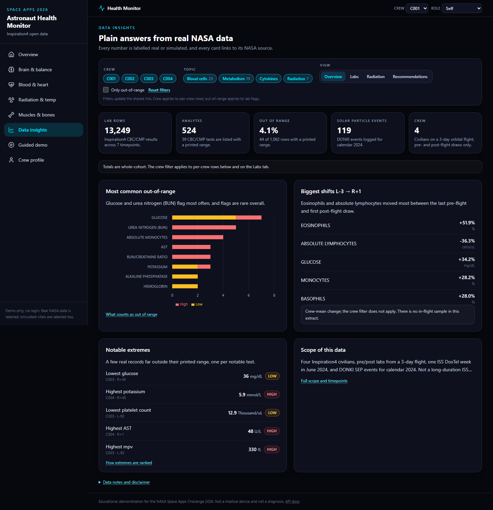

NASA Space Apps Challenge 2026 · Health Monitoring Software
T.H.A.I.S. — Astronaut Health Monitor
T.H.A.I.S. = Tech & Health Astronaut Intelligent System. A crew health board for astronauts, built on real Inspiration4 labs, ISS radiation and solar particle events — with every simulated value labelled and every claim linked to its NASA source.
Live demo nasa-health-app.vercel.app · Code github.com/NASA-Space-App-Challenge-Health/app
13,249
real Inspiration4 lab rows
524
analytes across CBC, CMP, cytokines
4.14%
rows outside the printed range
119
DONKI solar particle events, 2024
What it does
- One board for the crew. Status, emergency notice, vitals, labs, a clickable body map and a hygiene order in one view.
- OCHMO privacy model. OCHMO is NASA's Office of the Chief Health and Medical Officer. Emergencies broadcast generically; labs and notes stay with the CMO (Crew Medical Officer) and the flight surgeon. A crewmate sees a number only when its owner opts it in.
- Interactive body map and help loop. Two real records: the 528.5 µGy/h DosTel peak paired with the next DONKI SEP, and C003 potassium already low before the next draw. When a crewmate asks for help, another accepts and the board shows “Help on the way” in ≤3 s.
- Plain-language insights. One takeaway per chart, filters by crew and topic, and forecasts that state their uncertainty (7 draws, 95% interval, not a physiological model).
Real vs simulated — stated on screen
| Source | What | Label |
|---|---|---|
| OSD-569/575/656 | CBC, CMP, cytokine labs (4 crew, 7 timepoints) | REAL |
| RadLab | ISS DosTel dose rate, one week in June 2024 | REAL |
| DONKI | 119 solar energetic particle events (2024) | REAL |
| Generated | Heart rate, SpO₂, CO₂, temperature, sleep, cortisol, hydration, hygiene | SIMULATED |


Scope, stated plainly: four civilians on a three-day flight, pre/post-flight labs only, one vehicle
radiation week, no personal dosimetry. Risk cutoffs are app settings, not flight-surgeon limits.